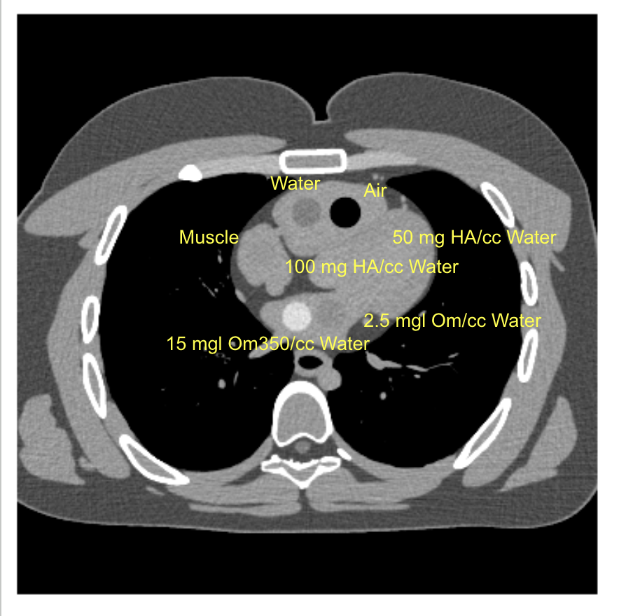
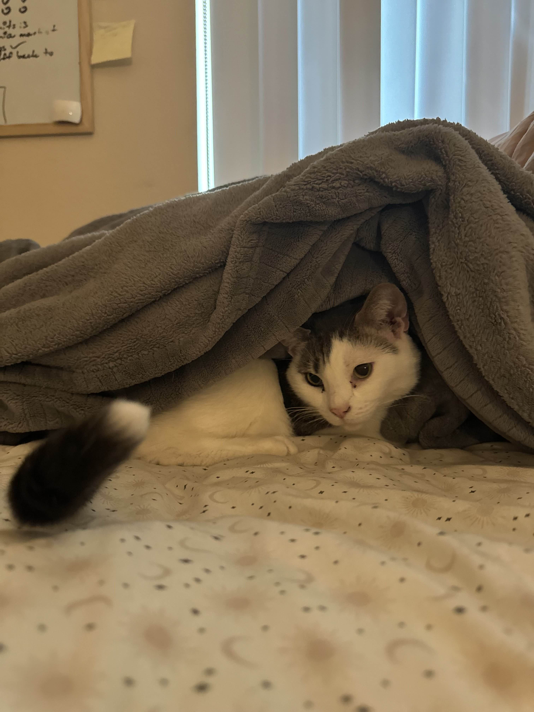
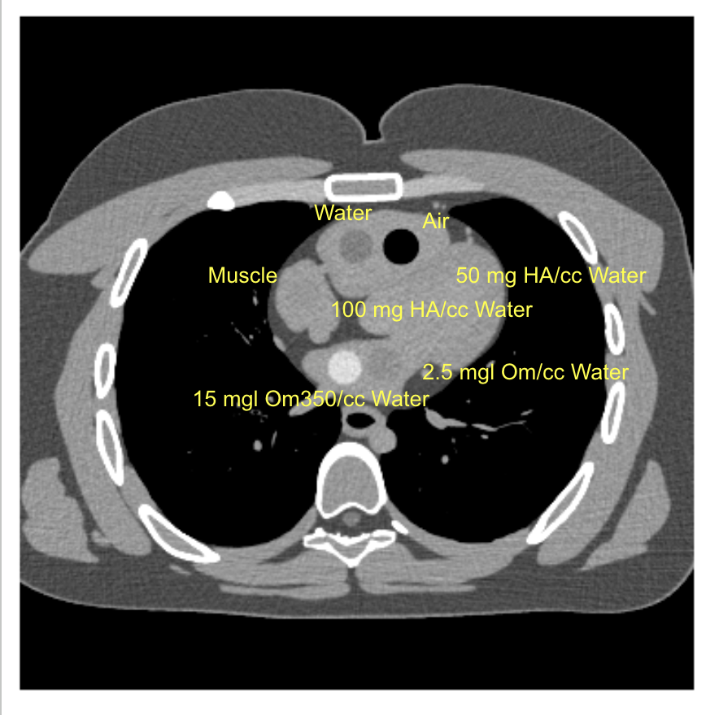
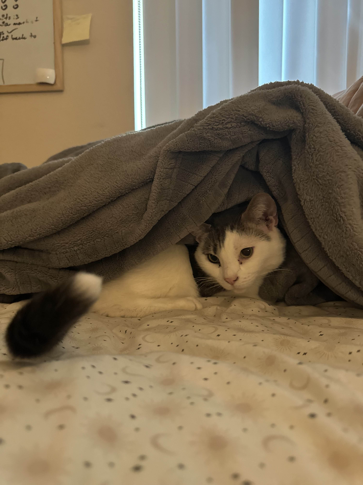

|
 |  |
Hello! I'm Tim. This is my little personal website. I really enjoy the charm of static websites, so you'll find no fancy CSS or TypeScript here (for now...)
I am a recent Computer Science graduate from UC Irvine with a degree in Computer Science.
I am driven by my passion for machine learning, especially computer vision tasks, and its potential to create real-world impact across interdisciplinary fields.
During my time at university, I had the opportunity to work in the Molloi Lab, a medical imaging research lab, where I applied machine learning techniques to detect early signs of diseases from CT scans.
Later, I had the opportunity to apply my skills in an entirely new domain as an intern with MBARI.There, I analyzed UAV images to help researchers measure kelp coverage and better understand the health of our marine ecosystems.
I hope to continue applying my skills to a variety of fields that combine computation, science, and real-world impact.
|
 |  |
© 2025 Tim Sananikone